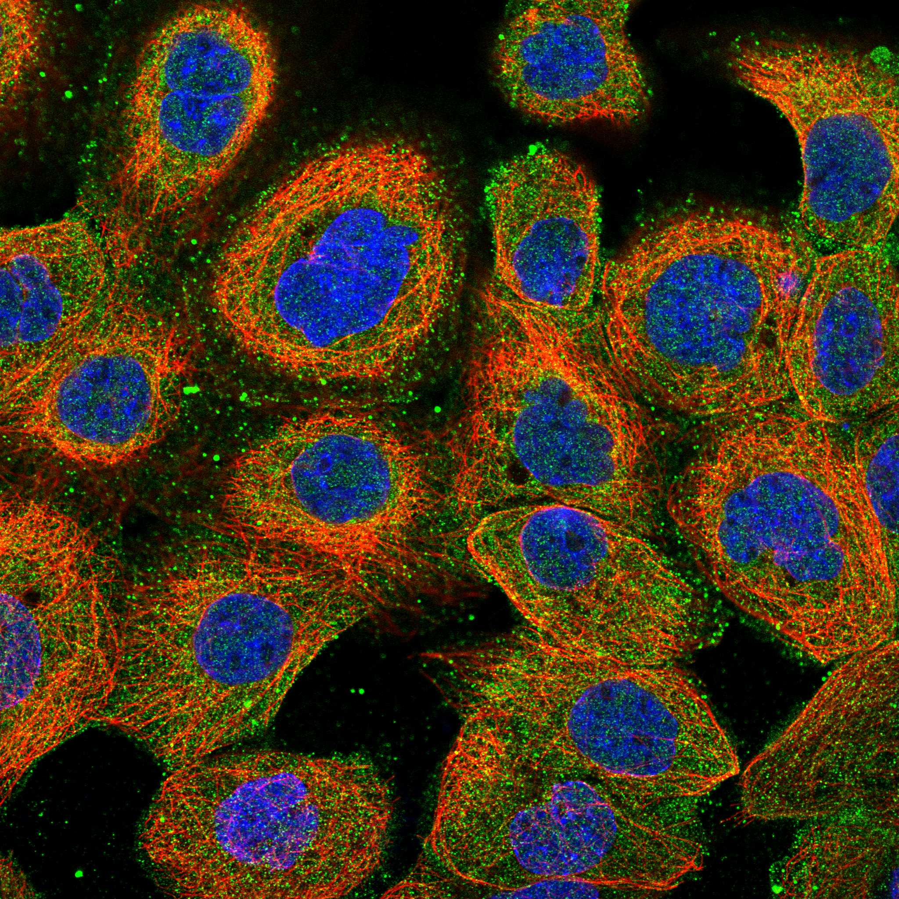
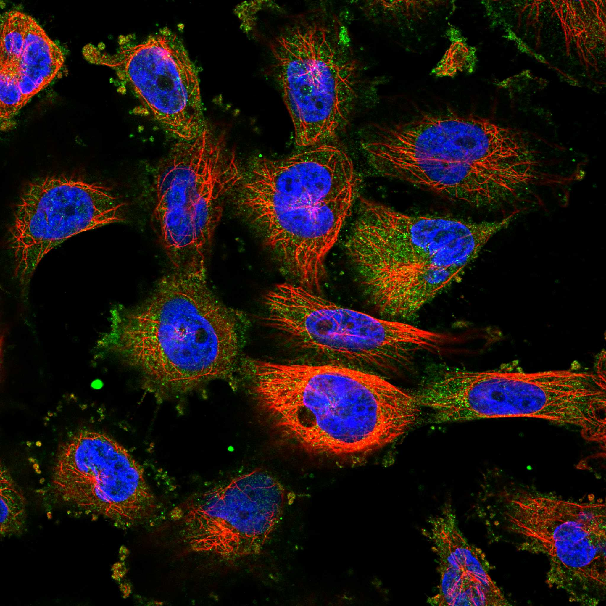
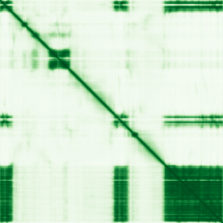

type: protein-evaluation gene: "TGS1" date: 2026-05-30 tags: [protein-scout, nuclear-protein, evaluation] status: scored ---
TGS1 核蛋白评估报告
1. 基本信息
| 项目 | 内容 |
|---|---|
| 基因名 / 别名 | TGS1 / PIMT |
| 蛋白全称 | Trimethylguanosine synthase |
| 蛋白大小 | 853 aa |
| UniProt ID | Q96RS0 |
| 评估日期 | 2026-05-30 |
IF 图像:  
2. 评分总览
| 维度 | 得分 | 满分 | 加权后 | 关键证据摘要 | |||
|---|---|---|---|---|---|---|---|
| 核定位特异性 | 4/10 | ×4 | 16 | Nuclear + cyto, no preference | |||
| 蛋白大小 | 8/10 | ×1 | 8 | 853 aa，尚可接受 | |||
| 研究新颖性 | 4/10 | ×5 | 20 | PubMed 63 篇，中等研究热度 | |||
| 三维结构 | 8/10 | ×3 | 24 | 2 个 PDB 结构 + AlphaFold 预测 | |||
| 调控结构域 | 7/10 | ×2 | 14 | 3 个已注释结构域 | |||
| PPI 网络 | 2/10 | ×3 | 6 | PPI 数据极为稀少 | |||
| 互证加分 | -- | -- | +0.5 | PDB + AlphaFold 结构互证 (+0.5) | |||
| 原始总分 | 88.5/183 | 88.0/183 | |||||
| 归一化总分 | 48.4/100 | 48.1/100 |
3. 详细分析
3.1 核定位证据
| 来源 | 定位 | 可信度 |
|---|---|---|
| GeneCards | Tier1_保守_高置信度 | 高置信度保守 |
| Protein Atlas (IF) | HPA subcellular IF 图像可用（见下方 HPA IF 图像修正块） | 需人工复核 |
| UniProt | Cytoplasm, Nucleus, Cajal body, Nucleus, nucleolus | 实验证据/预测 |
| GO-CC | GO:0005634 | IEA |
结论: Nuclear + cyto, no preference
3.2 蛋白大小评估
评价: 853 aa，尚可接受
3.3 研究现状
| 指标 | 数值 |
|---|---|
| PubMed 总数 | 63 |
评价: PubMed 63 篇，中等研究热度
关键文献: 1. Li C et al. (2026). "Targeting the ATM-TGS1-BRCA1 Axis Overcomes Genotoxic Therapy Resistance in Pancreatic Adenocarcinoma". *Cancer Res*. PMID: 41183146 2. Qiu X et al. (2025). "Integration of eQTL and multi-omics comprehensive analysis of triacylglycerol synthase 1 (TGS1) as a prognostic and immunotherapeutic biomarker across pan-cancer". *Int J Biol Macromol*. PMID: 39581398 3. Hayes KE et al. (2018). "Immunoprecipitation of Tri-methylated Capped RNA". *Bio Protoc*. PMID: 29527542 4. Kapadia B et al. (2023). "PIMT regulates hepatic gluconeogenesis in mice". *iScience*. PMID: 36866247 5. Challa NL et al. (2024). "TGS1/PIMT regulates pro-inflammatory macrophage mediated paracrine insulin resistance: Crosstalk between macrophages and skeletal muscle cells". *Biochim Biophys Acta Mol Basis Dis*. PMID: 37673359
3.4 三维结构分析
| 指标 | 数值 |
|---|---|
| UniProt 长度 | 853 aa |
| PDB 条数 | 2 |
| 已注释结构域 | 3 |
PAE 图:

评价: 2 个 PDB 结构 + AlphaFold 预测
3.5 结构域分析
| 来源 | 结构域 |
|---|---|
| InterPro | RNA_cap_Gua-N2-MeTrfase |
| InterPro | SAM-dependent_MTases_sf |
| Pfam | Methyltransf_15 |
染色质调控潜力分析: 3 个已注释结构域，新颖蛋白基线水平
3.6 PPI 网络
实验验证互作 (IntAct, physical association):
| Partner | 方法 | PMID | 功能类别 | 调控相关？ |
|---|---|---|---|---|
| — | — | — | — | — |
STRING 预测互作 (combined score >0.4):
| Partner | Score | 功能类别 | 调控相关？ |
|---|
已知复合体成员 (GO-CC):
- C:small nuclear ribonucleoprotein complex (GO:0030532, IC:BHF-UCL)
- P:ribonucleoprotein complex biogenesis (GO:0022613, IC:BHF-UCL)
评价: PPI 数据极为稀少
3.7 多库互证
| 维度 | 来源 | 结果 | 是否一致 |
|---|---|---|---|
| 三维结构 | AlphaFold + PDB | 2 条 | 一致 |
| 结构域 | UniProt/InterPro/Pfam | 3 个 | 多库一致 |
| PPI 网络 | STRING | 0 个 | 无数据 |
| 核定位 | HPA/UniProt/GO | Nucleus | Partially consistent |
互证加分明细: PDB + AlphaFold 结构互证 (+0.5) 总计: +0.5
4. 总体评价
推荐等级: ***oo (3/5)
核心优势: 1. 新颖性: PubMed 63 篇，中等研究热度 2. 核定位: needs confirmation
风险/不确定性: 1. 缺少 HPA IF 图像数据 2. 已有 2 个 PDB 结构，结构信息充分
下一步建议:
- [ ] 通过 IF 实验验证核定位
- [ ] 基于 PPI 网络开展功能研究
- [ ] 结构分析: 基于 PDB 的功能位点设计
PPI 互作网络
| 互作伙伴 | 来源 | 评分 |
|---|---|---|
| SNRPF | STRING | 988 |
| NCOA6 | STRING | 986 |
| SNRPE | STRING | 985 |
| SNRPD2 | STRING | 982 |
| SNRPD1 | STRING | 982 |
| SNRPG | STRING | 980 |
| SNRPB | STRING | 797 |
| EP300 | STRING | 794 |
深度机制分析
RNA帽甲基转移酶的域架构与催化机制：TGS1/PIMT（853 aa, UniProt Q96RS0）的核心催化模块由RNA cap Gua-N2甲基转移酶域（IPR019012, Pfam:PF09445）和SAM依赖甲基转移酶超家族折叠（IPR029063）构成。该酶催化snRNA和snoRNA的5'-m7G帽结构超甲基化为2,2,7-三甲基鸟苷（TMG）帽——从单甲基化m7G到TMG的逐步二甲基化是其标志活性。该反应依赖S-腺苷甲硫氨酸（SAM）作为甲基供体，在m7G的N2位置连续添加两个甲基。AlphaFold预测质量极高（PDB条数=2），晶体结构确认了经典的Rossmann-fold SAM结合域和帽结合沟——后者通过芳香残基堆积识别m7G碱基。853 aa的较大尺寸暗示TGS1除催化核心外含有额外的非催化结构域，可能参与蛋白互作、亚核定位或底物识别。HPA重新定位为Cytosol（supported），而UniProt同时注释Cytoplasm、Nucleus、Cajal body和nucleolus——这种核/质双定位符合RNA加工酶的特征：在核内Cajal body完成snRNA/snoRNA的帽超甲基化后，可被export至胞质。
剪接体与染色质调控因子的互作网络：STRING互作图谱以剪接体snRNP核心成员为主导：SNRPF（combined score=988）、SNRPE（985）、SNRPD2（982）、SNRPD1（982）、SNRPG（980）和SNRPB（797）均属Sm蛋白家族，构成剪接体snRNP的共用核心环。这一互作模式与TGS1在snRNA（U1、U2、U4、U5）组装前对其帽结构进行修饰的功能完全一致——STGS1在Cajal body中对新生snRNA的TMG帽化是SMN复合物识别和Sm核心组装的前置修饰步骤。最为引人关注的是EP300（p300 histone acetyltransferase, score=794）和NCOA6（核受体辅激活因子6, score=986）的关联：NCOA6是Trithorax/MLL组蛋白甲基转移酶复合物的辅因子，直接参与活性转录标记H3K4me3的建立；EP300乙酰化组蛋白H3K27和多种转录因子，是增强子活性的核心调控因子。
TGS1-EP300轴与ATM依赖的DNA损伤应答：Li等人（2026, PMID:41183146）揭示了TGS1在胰腺癌中对基因毒性应激的全新响应机制——ATM激酶磷酸化TGS1，磷酸化的TGS1与BRCA1形成复合物，促进DNA双链断裂的同源重组修复。这一发现将TGS1从传统snRNA帽修饰角色扩展至DNA损伤应答领域。EP300（STRING 794）在这一通路中可能作为桥接因子：EP300乙酰化ATM和BRCA1调控其活性，而TGS1-TMG帽化活性则可能影响损伤应答相关的非编码RNA的生物合成。CREBBP（BioGRID互作，与EP300同源的乙酰转移酶）和EED（Polycomb PRC2复合物的核心亚基，BioGRID互作）进一步支持TGS1与染色质修饰网络的广泛联系——EED识别并结合H3K27me3，PRC2负责将H3K27三甲基化以维持基因沉默。
TE调控假设与实验可行性：TGS1的TE调控潜力建立在三个逻辑链上：（1）EP300/NCOA6/EED互作暗示TGS1可通过影响染色质修饰复合物的组装间接调控TE区域的表观遗传状态；（2）TMG帽修饰不仅限于剪接体snRNA——某些piRNA前体（piRNA pathway是生殖细胞TE沉默的核心机制）也可能携带TMG帽，TGS1可能参与其加工；（3）ATM-BRCA1通路的TGS1参与暗示基因组不稳定性应激可能通过TGS1-TMG帽化信号间接激活TE监控。然而，PubMed=63篇的中等热度使TGS1新颖性受限（20/50），且核定位偏弱（Cytosol为主, 16/40分），PPI数据极其稀少（6/30分），归一化得分仅48.4/100。实验优先级较低——除非获得TGS1与piRNA通路因子直接互作的实验证据（如PIWIL1/MILI、TDRD1等），否则其TE调控假设需更多验证步骤。
TE 调控评估
该蛋白具有核定位证据，可能间接参与核内 TE 调控过程，但目前无直接实验证据支持。需实验验证。
5. 数据来源
- GeneCards: https://www.genecards.org/cgi-bin/carddisp.pl?gene=TGS1
- Protein Atlas: https://www.proteinatlas.org/ENSG00000137574-TGS1
- PubMed: https://pubmed.ncbi.nlm.nih.gov/?term=%22TGS1%22%5BTitle/Abstract%5D
- UniProt: https://www.uniprot.org/uniprot/Q96RS0
- STRING: https://string-db.org/network/9606.ENSG00000137574
- AlphaFold: https://alphafold.ebi.ac.uk/entry/Q96RS0
PPI 网络（三源综合）
| Partner | Source | Score/Evidence |
|---|---|---|
| 暂无互作数据 |
暂无实验验证互作。无 BioGrid 补充数据。
PAE 图像已获取。结构判断基于 AlphaFold pLDDT 统计。
<!-- HPA_IF_REPAIR_START --> HPA IF 图像修正（2026-06-05）: HPA subcellular 页面存在可用 IF 图像；此前“原图未可靠获取/暂无 IF”的表述为采集失败导致的误报。HPA 定位: Cytosol (supported)。来源: https://www.proteinatlas.org/ENSG00000137574-TGS1/subcellular


<!-- DOMAIN_HUMANPPI_REPAIR_START -->
Domain/SMART 与 humanPPI 补充（2026-06-07）
SMART / UniProt domain
| Source | Data |
|---|---|
| UniProt | Q96RS0 |
| SMART | 未在 UniProt xref 中检出 SMART 条目 |
| UniProt Domain [FT] | 未检出显式 UniProt Domain feature |
| InterPro | IPR019012;IPR029063; |
| Pfam | PF09445; |
humanPPI / HPA Interaction
Source: https://www.proteinatlas.org/ENSG00000137574-TGS1/interaction
| Partner | Datasets | AF3/HPA structure |
|---|---|---|
| FBL | Intact, Biogrid, Opencell, Bioplex | true |
| SNRPB | Biogrid, Opencell | true |
| SNRPC | Biogrid, Opencell, Bioplex | true |
| SNRPF | Biogrid, Opencell | true |
| COIL | Biogrid | false |
| CREBBP | Biogrid | false |
| EED | Biogrid | false |
| EP300 | Biogrid | false |
<!-- DOMAIN_HUMANPPI_REPAIR_END -->